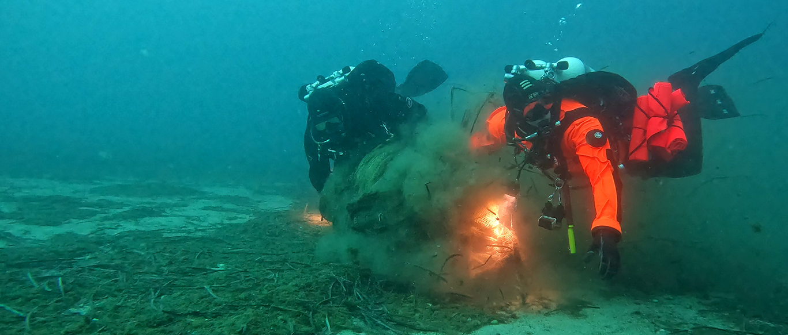
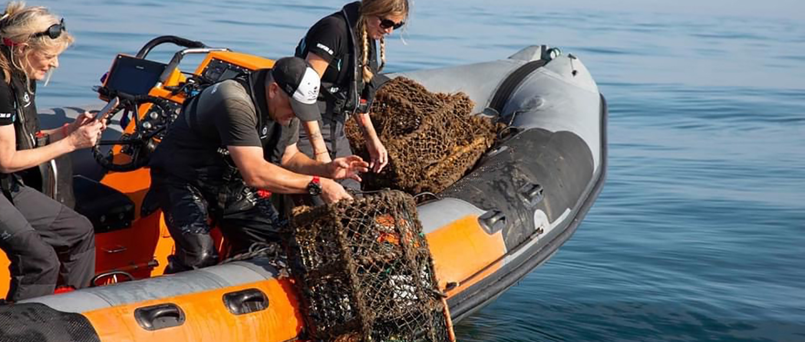
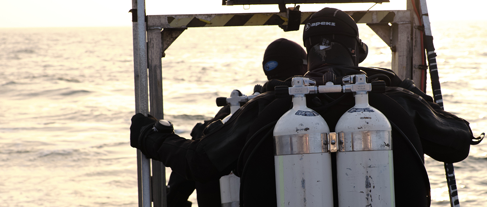
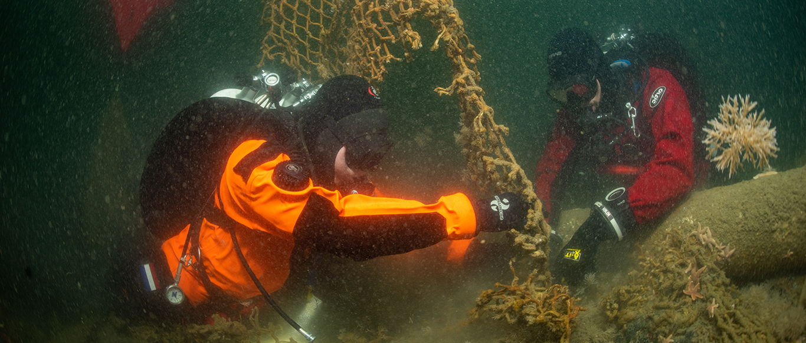

Three tons of fish farm nets recovered in Patroklos,
Greece
December 2021 brought us again to Patroklos, a small
island in the Attica region. The island has great
historical and archeological value and belongs to the
NATURA 2000 Network of Protected Areas...

UK Ghost Gear Coalition Formed to Reduce Diving Team
Response Time
To reduce the response time to reported sightings of
ghost gear and to widen their geographical reach,
Fathoms Free, Ghost Diving UK, NARC and Sea Shepherd
Ghostnet Campaign have decided to form a coalition to
combine their extensive resources and improve
efficiency....

British team helping in heritage project
British North East GUE "Ghost Divers" have recently been
targeting shipwrecks along the coastline between
Newcastle upon Tyne and Stock upon Tees....
.jpg)
Photogrammetry Ghost Diving UK North Sea
Photogrammetry. It’s the new ‘buzz’ word within the
diving world and I am sure most of you will have heard
of it by now. This modern 3D modelling technique has
significant advantages in helping with diving projects
such as Ghost Diving.....

The worst conditions are the best teachers
On the weekend of October 9, we set out with Aquila
Charter to continue our cleanup efforts on the SS
Trevier. This wreck, which we've been diving on for over
10 years and even identified....